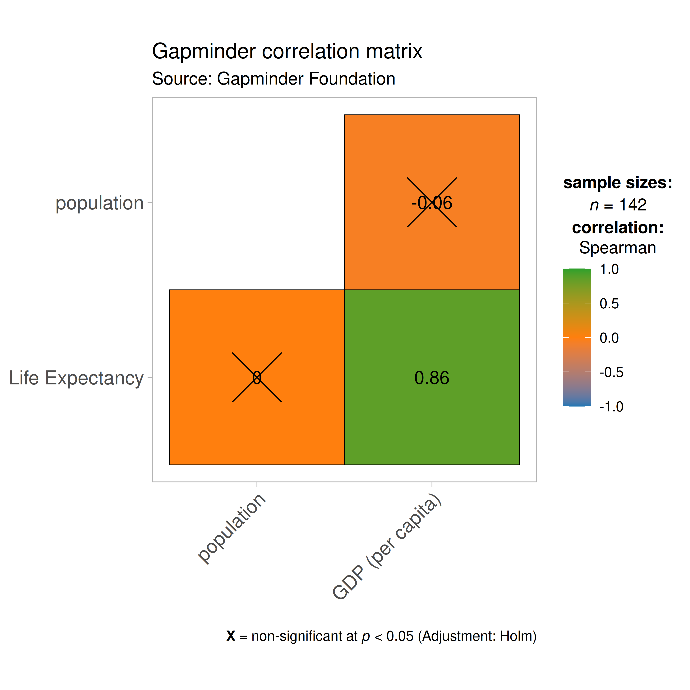

You can cite this package/vignette as:
Patil, I. (2021). Visualizations with statistical details: The
'ggstatsplot' approach. Journal of Open Source Software, 6(61), 3167,
doi:10.21105/joss.03167
A BibTeX entry for LaTeX users is
@Article{,
doi = {10.21105/joss.03167},
url = {https://doi.org/10.21105/joss.03167},
year = {2021},
publisher = {{The Open Journal}},
volume = {6},
number = {61},
pages = {3167},
author = {Indrajeet Patil},
title = {{Visualizations with statistical details: The {'ggstatsplot'} approach}},
journal = {{Journal of Open Source Software}},
}Lifecycle: 
The function ggcorrmat provides a quick way to produce
publication-ready correlation matrix (aka
correlalogram) plot. The function can also be used for quick
data exploration. In addition to the plot, it can also
be used to get a correlation coefficient matrix or the associated
p-value matrix. Currently, the plot can display Pearson’s
r (and its Bayesian version), Spearman’s rho, and
robust correlation coefficient (Winsorized Pearson’s
r). This function is a convenient wrapper around
ggcorrplot::ggcorrplot function with some additional
functionality.
We will see examples of how to use this function in this vignette
with the gapminder and diamonds dataset.
To begin with, here are some instances where you would want to use
ggcorrmat-
- to easily visualize a correlation matrix using ggplot2
- to quickly explore correlation between (all) numeric variables in the dataset
Correlation matrix plot with ggcorrmat
For the first example, we will use the gapminder dataset
(available in eponymous package on CRAN)
provides values for life expectancy, Gross Domestic Product (GDP) per
capita, and population, every five years, from 1952 to 2007, for each of
142 countries and was collected by the Gapminder Foundation. Let’s have
a look at the data-
library(gapminder)
library(dplyr)
dplyr::glimpse(gapminder)
#> Rows: 1,704
#> Columns: 6
#> $ country <fct> "Afghanistan", "Afghanistan", "Afghanistan", "Afghanistan", …
#> $ continent <fct> Asia, Asia, Asia, Asia, Asia, Asia, Asia, Asia, Asia, Asia, …
#> $ year <int> 1952, 1957, 1962, 1967, 1972, 1977, 1982, 1987, 1992, 1997, …
#> $ lifeExp <dbl> 28.801, 30.332, 31.997, 34.020, 36.088, 38.438, 39.854, 40.8…
#> $ pop <int> 8425333, 9240934, 10267083, 11537966, 13079460, 14880372, 12…
#> $ gdpPercap <dbl> 779.4453, 820.8530, 853.1007, 836.1971, 739.9811, 786.1134, …Let’s say we are interested in studying correlation between population of a country, average life expectancy, and GDP per capita across countries only for the year 2007.
The simplest way to get a correlation matrix is to stick to the defaults-
## setup
set.seed(123)
library(ggstatsplot)
## select data only from the year 2007
gapminder_2007 <- dplyr::filter(gapminder::gapminder, year == 2007)
## producing the correlation matrix
ggcorrmat(
data = gapminder_2007, ## data from which variable is to be taken
cor.vars = lifeExp:gdpPercap ## specifying correlation matrix variables
)
This plot can be further modified with additional arguments-
ggcorrmat(
data = gapminder_2007, ## data from which variable is to be taken
cor.vars = lifeExp:gdpPercap, ## specifying correlation matrix variables
cor.vars.names = c(
"Life Expectancy",
"population",
"GDP (per capita)"
),
type = "spearman", ## which correlation coefficient is to be computed
lab.col = "red", ## label color
ggtheme = ggplot2::theme_light(), ## selected ggplot2 theme
## turn off default ggestatsplot theme overlay
matrix.type = "lower", ## correlation matrix structure
colors = NULL, ## turning off manual specification of colors
palette = "category10_d3", ## choosing a color palette
package = "ggsci", ## package to which color palette belongs
title = "Gapminder correlation matrix", ## custom title
subtitle = "Source: Gapminder Foundation" ## custom subtitle
)
As seen from this correlation matrix, although there is no relationship between population and life expectancy worldwide, at least in 2007, there is a strong positive relationship between GDP, a well-established indicator of a country’s economic performance.
Given that there were only three variables, this doesn’t look that
impressive. So let’s work with another example from
ggplot2 package: the diamonds dataset.
This dataset contains the prices and other attributes of almost 54,000
diamonds.
Let’s have a look at the data-
library(ggplot2)
dplyr::glimpse(ggplot2::diamonds)
#> Rows: 53,940
#> Columns: 10
#> $ carat <dbl> 0.23, 0.21, 0.23, 0.29, 0.31, 0.24, 0.24, 0.26, 0.22, 0.23, 0.…
#> $ cut <ord> Ideal, Premium, Good, Premium, Good, Very Good, Very Good, Ver…
#> $ color <ord> E, E, E, I, J, J, I, H, E, H, J, J, F, J, E, E, I, J, J, J, I,…
#> $ clarity <ord> SI2, SI1, VS1, VS2, SI2, VVS2, VVS1, SI1, VS2, VS1, SI1, VS1, …
#> $ depth <dbl> 61.5, 59.8, 56.9, 62.4, 63.3, 62.8, 62.3, 61.9, 65.1, 59.4, 64…
#> $ table <dbl> 55, 61, 65, 58, 58, 57, 57, 55, 61, 61, 55, 56, 61, 54, 62, 58…
#> $ price <int> 326, 326, 327, 334, 335, 336, 336, 337, 337, 338, 339, 340, 34…
#> $ x <dbl> 3.95, 3.89, 4.05, 4.20, 4.34, 3.94, 3.95, 4.07, 3.87, 4.00, 4.…
#> $ y <dbl> 3.98, 3.84, 4.07, 4.23, 4.35, 3.96, 3.98, 4.11, 3.78, 4.05, 4.…
#> $ z <dbl> 2.43, 2.31, 2.31, 2.63, 2.75, 2.48, 2.47, 2.53, 2.49, 2.39, 2.…Let’s see the correlation matrix between different attributes of the diamond and the price.
## for reproducibility
set.seed(123)
## let's use just 5% of the data to speed it up
ggcorrmat(
data = dplyr::sample_frac(ggplot2::diamonds, size = 0.05),
cor.vars = c(carat, depth:z), ## note how the variables are getting selected
cor.vars.names = c(
"carat",
"total depth",
"table",
"price",
"length (in mm)",
"width (in mm)",
"depth (in mm)"
),
ggcorrplot.args = list(outline.color = "black", hc.order = TRUE)
)
We can make a number of changes to this basic correlation matrix. For
example, since we were interested in relationship between price and
other attributes, let’s make the price column to the the
first column.
## for reproducibility
set.seed(123)
## let's use just 5% of the data to speed it up
ggcorrmat(
data = dplyr::sample_frac(ggplot2::diamonds, size = 0.05),
cor.vars = c(price, carat, depth:table, x:z), ## note how the variables are getting selected
cor.vars.names = c(
"price",
"carat",
"total depth",
"table",
"length (in mm)",
"width (in mm)",
"depth (in mm)"
),
type = "spearman",
title = "Relationship between diamond attributes and price",
subtitle = "Dataset: Diamonds from ggplot2 package",
colors = c("#0072B2", "#D55E00", "#CC79A7"),
pch = "square cross",
## additional aesthetic arguments passed to `ggcorrmat`
ggcorrplot.args = list(
lab_col = "yellow",
lab_size = 6,
tl.srt = 90,
pch.col = "white",
pch.cex = 14
)
) + ## modification outside `{ggstatsplot}` using `{ggplot2}` functions
ggplot2::theme(
axis.text.x = ggplot2::element_text(
margin = ggplot2::margin(t = 0.15, r = 0.15, b = 0.15, l = 0.15, unit = "cm")
)
)
As seen here, and unsurprisingly, the strongest predictor of the diamond price is its carat value, which a unit of mass equal to 200 mg. In other words, the heavier the diamond, the more expensive it is going to be.
Dataframe containing statistics with ggcorrmat
Another utility of ggcorrmat is in obtaining a dataframe
containing all details from statistical analyses. Such dataframes can be
easily embedded in manuscripts as tables.
## for reproducibility
set.seed(123)
## to get correlations
ggcorrmat(
data = dplyr::sample_frac(ggplot2::txhousing, size = 0.15),
cor.vars = sales:inventory,
output = "dataframe",
type = "robust",
digits = 3
)
#> # A tibble: 10 × 11
#> parameter1 parameter2 estimate conf.level conf.low conf.high statistic
#> <chr> <chr> <dbl> <dbl> <dbl> <dbl> <dbl>
#> 1 sales volume 0.983 0.95 0.981 0.985 185.
#> 2 sales median 0.478 0.95 0.433 0.521 18.8
#> 3 sales listings 0.885 0.95 0.872 0.898 62.7
#> 4 sales inventory -0.457 0.95 -0.503 -0.409 -16.9
#> 5 volume median 0.575 0.95 0.536 0.612 24.3
#> 6 volume listings 0.876 0.95 0.862 0.889 59.8
#> 7 volume inventory -0.437 0.95 -0.484 -0.388 -16.0
#> 8 median listings 0.428 0.95 0.378 0.475 15.6
#> 9 median inventory -0.193 0.95 -0.250 -0.135 -6.47
#> 10 listings inventory -0.170 0.95 -0.228 -0.112 -5.69
#> df.error p.value method n.obs
#> <int> <dbl> <chr> <int>
#> 1 1202 0 Winsorized Pearson correlation 1204
#> 2 1195 1.21e- 68 Winsorized Pearson correlation 1197
#> 3 1083 0 Winsorized Pearson correlation 1085
#> 4 1080 2.55e- 56 Winsorized Pearson correlation 1082
#> 5 1195 1.45e-105 Winsorized Pearson correlation 1197
#> 6 1083 0 Winsorized Pearson correlation 1085
#> 7 1080 3.39e- 51 Winsorized Pearson correlation 1082
#> 8 1083 4.17e- 49 Winsorized Pearson correlation 1085
#> 9 1080 2.94e- 10 Winsorized Pearson correlation 1082
#> 10 1080 1.68e- 8 Winsorized Pearson correlation 1082Note that if cor.vars are not specified, all numeric
variables will be used. Moreover, you can also use abbreviations to
specify what output you want in return. Additionally, one can also carry
out partial correlation analysis:
## for reproducibility
set.seed(123)
options(pillar.sigfig = 4)
## getting the correlation coefficient matrix
ggcorrmat(
data = iris, ## all numeric variables from data will be used
type = "np", ## non-parametric
partial = TRUE,
output = "dataframe"
)
#> # A tibble: 6 × 10
#> parameter1 parameter2 estimate conf.level conf.low conf.high statistic
#> <chr> <chr> <dbl> <dbl> <dbl> <dbl> <dbl>
#> 1 Sepal.Length Sepal.Width 0.6157 0.95 0.5017 0.7087 216164.
#> 2 Sepal.Length Petal.Length 0.6817 0.95 0.5822 0.7610 179048.
#> 3 Sepal.Length Petal.Width -0.3036 0.95 -0.4461 -0.1460 733226.
#> 4 Sepal.Width Petal.Length -0.6339 0.95 -0.7232 -0.5237 919030.
#> 5 Sepal.Width Petal.Width 0.3624 0.95 0.2100 0.4975 358655.
#> 6 Petal.Length Petal.Width 0.8626 0.95 0.8134 0.8995 77303.
#> p.value method n.obs
#> <dbl> <chr> <int>
#> 1 1.528e-16 Spearman correlation 150
#> 2 3.937e-21 Spearman correlation 150
#> 3 1.591e- 4 Spearman correlation 150
#> 4 1.249e-17 Spearman correlation 150
#> 5 1.039e- 5 Spearman correlation 150
#> 6 7.322e-45 Spearman correlation 150Grouped analysis with grouped_ggcorrmat
What if we want to do the same analysis separately for each quality
of the diamond cut (Fair, Good, Very Good, Premium,
Ideal)?
ggstatsplot provides a special helper function for
such instances: grouped_ggcorrmat. This is merely a wrapper
function around combine_plots. It applies
ggcorrmat across all levels of a specified
grouping variable and then combines list of individual
plots into a single plot. Note that the grouping variable can be
anything: conditions in a given study, groups in a study sample,
different studies, etc.
## for reproducibility
set.seed(123)
## plot
grouped_ggcorrmat(
## arguments relevant for `ggcorrmat`
data = ggplot2::diamonds,
type = "bayes", ## Bayesian test
grouping.var = cut,
## arguments relevant for `combine_plots`
plotgrid.args = list(nrow = 3),
annotation.args = list(
tag_levels = "a",
title = "Relationship between diamond attributes and price across cut",
caption = "Dataset: Diamonds from ggplot2 package"
)
)
Note that this function also makes it easy to run the same correlation matrix across different levels of a factor/grouping variable.
## for reproducibility
set.seed(123)
## let's obtain correlation coefficients with their CIs
grouped_ggcorrmat(
data = ggplot2::msleep,
cor.vars = sleep_total:awake,
grouping.var = vore,
output = "dataframe"
)
#> # A tibble: 24 × 12
#> vore parameter1 parameter2 estimate conf.level conf.low conf.high
#> <chr> <chr> <chr> <dbl> <dbl> <dbl> <dbl>
#> 1 carni sleep_total sleep_rem 0.9189 0.95 0.6864 0.9810
#> 2 carni sleep_total sleep_cycle 0.3764 0.95 -0.7574 0.9449
#> 3 carni sleep_total awake -1.000 0.95 -1.000 -1.000
#> 4 carni sleep_rem sleep_cycle 0.1216 0.95 -0.8521 0.9066
#> 5 carni sleep_rem awake -0.9189 0.95 -0.9810 -0.6865
#> 6 carni sleep_cycle awake -0.3764 0.95 -0.9449 0.7574
#> 7 herbi sleep_total sleep_rem 0.8610 0.95 0.7012 0.9385
#> 8 herbi sleep_total sleep_cycle -0.7148 0.95 -0.9138 -0.2389
#> 9 herbi sleep_total awake -1 0.95 -1 -1
#> 10 herbi sleep_rem sleep_cycle -0.4070 0.95 -0.7952 0.2178
#> statistic df.error p.value method n.obs
#> <dbl> <int> <dbl> <chr> <int>
#> 1 6.589e+0 8 8.564e- 4 Pearson correlation 10
#> 2 7.038e-1 3 1 e+ 0 Pearson correlation 5
#> 3 -1.386e+3 17 1.284e- 43 Pearson correlation 19
#> 4 2.122e-1 3 1 e+ 0 Pearson correlation 5
#> 5 -6.589e+0 8 8.564e- 4 Pearson correlation 10
#> 6 -7.038e-1 3 1 e+ 0 Pearson correlation 5
#> 7 7.942e+0 22 3.330e- 7 Pearson correlation 24
#> 8 -3.232e+0 10 2.697e- 2 Pearson correlation 12
#> 9 -3.676e+8 30 1.363e-235 Pearson correlation 32
#> 10 -1.409e+0 10 1.891e- 1 Pearson correlation 12
#> # … with 14 more rowsGrouped analysis with ggcorrmat +
{purrr}
Although grouped_ function is good for quickly exploring
the data, it reduces the flexibility with which this function can be
used. This is the because the common parameters used are applied to
plots corresponding to all levels of the grouping variable and there is
no way to customize the arguments for different levels of the grouping
variable. We will see how this can be done using the
purrr package.
See the associated vignette here: https://indrajeetpatil.github.io/ggstatsplot/articles/web_only/purrr_examples.html
Summary of graphics
| graphical element |
geom_ used |
argument for further modification |
|---|---|---|
| correlation matrix | ggcorrplot::ggcorrplot |
ggcorrplot.args |
Summary of tests
Hypothesis testing and Effect size estimation
| Type | Test | CI? | Function used |
|---|---|---|---|
| Parametric | Pearson’s correlation coefficient | ✅ | correlation::correlation |
| Non-parametric | Spearman’s rank correlation coefficient | ✅ | correlation::correlation |
| Robust | Winsorized Pearson correlation coefficient | ✅ | correlation::correlation |
| Bayesian | Pearson’s correlation coefficient | ✅ | correlation::correlation |
Suggestions
If you find any bugs or have any suggestions/remarks, please file an
issue on GitHub: https://github.com/IndrajeetPatil/ggstatsplot/issues